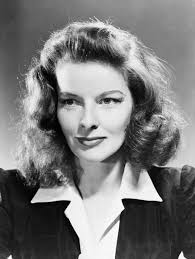
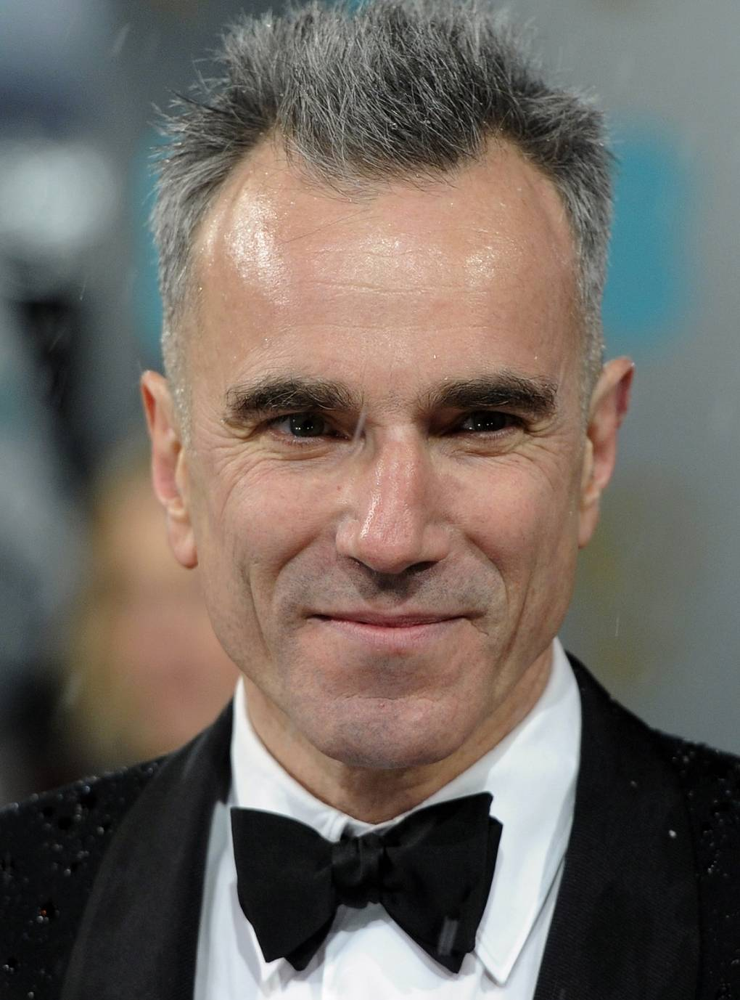
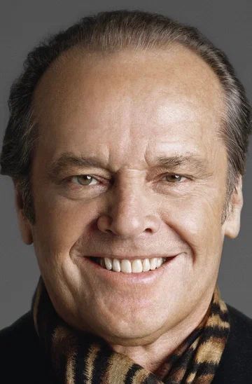
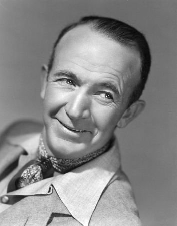

Актеры с большим числом оскаров

Кэтрин Хепбёрн
4 премии «Оскар» за лучшую женскую роль.

Дэниел Дэй-Льюис
3 премии «Оскар» за лучшую мужскую роль.

Джек Николсон
3 премии «Оскар» (2 за лучшую мужскую роль, 1 за лучшую мужскую роль второго плана).

Уолтер Бреннан
3 премии «Оскар» за лучшую мужскую роль второго плана.

Мэрил Стрип
3 премии «Оскар» и рекордные 21 номинация.